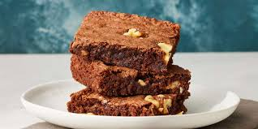

Brownies

Brownies are rich, dense, and fudgy baked treats that sit deliciously
between a cake and a cookie. Made primarily from ingredients like chocolate, butter,
sugar, eggs, and flour, brownies are beloved for their deep chocolate flavor and
moist, chewy texture. They can be customized with a variety of add-ins such as nuts,
chocolate chips, or swirls of caramel or cream cheese.
Ingredients
- Sugar
- Flour
- Butter
- Eggs
- Cocoa powder
- Vanilla
- Baking powder
- Salt
- Walnuts
Steps
- Gather all ingredients
- Preheat the oven to 350 degrees F (175 degrees C). Grease a 9x13-inch pan
- Mix sugar, flour, melted butter, eggs, cocoa powder, vanilla, baking powder,
and salt in a large bowl until combined
- Spread the batter into the prepared pan
- Decorate with walnut halves
- Bake in the preheated oven until top is dry and edges have
started to pull away from the sides of the pan, about 20 to 30 minutes.
- Cool before slicing into squares. Enjoy!
Recipe was heavily inspired by Quick and Easy Brownies
Home